Show as text (only works on Gecko browsers, such as Firefox)
 |
 |
  |
|
 |
|
| vc- | -cvc- | -cv | -c+mvs+v | nnbsp+ | |
| 1 | ᠠᠲ᠊ | ᠊ᠲᠠᠲ᠊ | ᠊ᠲᠠ | ᠊ᠲᠠ | ᠠ ᠠᠴᠠ ᠠᠴᠠᠭᠠᠨ |
| 2 | ᠠᠪ᠊ | ᠊ᠪᠠᠪ᠊ | ᠊ᠪᠠ | ᠊ᠪᠠ |
᠀
Marks the start of a passage or the recto side of a folio. It appears in several glyph variants. Refs: Unicode
`, '\u{1801}': `᠁
Ellipsis.
`, '\u{1802}': `᠂
Comma.
`, '\u{1803}': `᠃
Full stop.
`, '\u{1804}': `᠄
Colon.
`, '\u{1805}': `᠅
Marks the end of a passage or chapter.
`, '\u{1806}': `᠆
A hyphen that can be used for compound words in Mongolian, in the same way that ‐ [U+2010 HYPHEN] is used in English. The descriptions file of the Unicode Standard clarifies that this is not a formatting character, but just a regular hyphen. The difference is that when the compound word is split across a line end the hyphen appears at the start of the next line, not at the end of the current line. (The line-break property value is Break_Before (BB).)u,545
`, '\u{1807}': `᠇
`, '\u{1808}': `᠈
`, '\u{1809}': `᠉
`, '\u{180A}': `᠊
Baseline extender.
Used in traditional typography to physically extend the stem of joining letters to increase the separation between all letters of the word. Ideally, this stretching would be carried out by the font, rather than by inserting this character.
May also separate two parts of a compound word, like ‐ [U+2010 HYPHEN] except that it is non-breaking, eg. altan-agula The Golden Mountains.
`, '\u{180B}': `᠋
`, '\u{180C}': `᠌
`, '\u{180D}': `᠍
`, '\u{180E}': `
In some Mongolian words that end with ᠠ or ᠡ a special 'forward tail' glyph shape is used, and the glyph is slightly separated from the rest of the word (see the example below). The shape of the previous letter may also change, when this occurs, depending on the letter and sometimes whether this is a traditional or modern orthography. Whether this forward tail shaping is applied or not depends on the word – there are no rules to determine when to apply it.
The final letter is not a suffix, but is an integral part of the word, and line breaking, word selection, etc. should not split the start of the word from the last letter, even though there is a gap.
To achieve this effect in Unicode, it is currently necessary to use 180E immediately before the last letter. Click on the text in the example below to see the sequence of characters.
Without MVS: ᠬᠠᠨᠠ
With MVS: ᠬᠠᠨᠠ
`, '\u{1810}': `᠐
0 digit.
`, '\u{1811}': `᠑
1 digit.
`, '\u{1812}': `᠒
2 digit.
`, '\u{1813}': `᠓
3 digit.
`, '\u{1814}': `᠔
4 digit.
`, '\u{1815}': `᠕
5 digit.
`, '\u{1816}': `᠖
6 digit.
`, '\u{1817}': `᠗
7 digit.
`, '\u{1818}': `᠘
8 digit.
`, '\u{1819}': `᠙
9 digit.
`, '\u{1820}': `ᠠ
a ~ ə ATR- (back) vowel.
ᠠᠳᠠ
ᠢᠮᠠᠭᠠ
ᠠᠭᠠᠭ
Vowel combinations
This letter is used alongside other vowels in the following sequences:
ai is sometimes pronounced æ or e
Shapes
Shaping depends on whether a letter is syllable-initial or syllable-final, but there are typically additional differences for word-initial and word-final syllables. Hint: to find the letters in the text examples, do an in-page search for the letter and highlight the results.
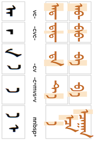 |
|
|
|
|
|
| vc- | -cvc- | -cv | -c+mvs+v | nnbsp+ | |
| 1 | ᠠᠲ᠊ | ᠊ᠲᠠᠲ᠊ | ᠊ᠲᠠ | ᠊ᠲᠠ | ᠠ ᠠᠴᠠ ᠠᠴᠠᠭᠠᠨ |
| 2 | ᠠᠪ᠊ | ᠊ᠪᠠᠪ᠊ | ᠊ᠪᠠ | ᠊ᠪᠠ |
Variants
The following glyph changes should be produced by the font, without the need for variant selectors.
is used after n, q, g, m, l , s, sh, t, d, ch, j, y, r, w., is used after b, p, ts, dz, h. is used after MVS. and are used after NNBSP.Other variants include:  (isolate)
(isolate) (medial).
(medial).
Historical variants include:  (isolate, Todo)(initial, Todo)
(isolate, Todo)(initial, Todo)

 (medial) and
(medial) and 


 .
.
Confusables
and are also visually identical to syllable final glyphs for 1828, and are distinguished only by context. For example, the following 2 words look the same, but if you click on the red text you will see that the characters make it clear which is which.
ᠰᠠᠮ
ᠰᠡᠮ
Derived from
Old Uyghur aleph, written twice for isolate and initial forms.ws
Chakhar ɑ
`, '\u{1821}': `ᠡ
e ~ i ~ ə ATR+ (front) vowel.
ᠡᠮᠡᠭᠲᠡᠢ
ᠪᠡᠭᠡᠵᠢᠩ
ᠡᠬᠡ
ᠡᠭᠦᠯᠡ
Vowel combinations
This letter is used alongside other vowels in the following sequences:
An alternate form which is only used for foreign words is encoded as ᠧ.
Shapes
Shaping depends on whether a letter is syllable-initial or syllable-final, but there are typically additional differences for word-initial and word-final syllables. Hint: to find the letters in the text examples, do an in-page search for the letter and highlight the results.
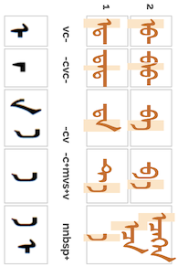 |
|
|
|
|
|
| vc- | -cvc- | -cv | -c+mvs+v | nnbsp+ | |
| 1 | ᠡᠲ᠊ | ᠊ᠲᠡᠲ᠊ | ᠊ᠲᠡ | ᠊ᠲᠡ | ᠡ ᠡᠴᠡ ᠡᠴᠡᠭᠡᠨ |
| 2 | ᠡᠪ᠊ | ᠊ᠪᠡᠪ᠊ | ᠊ᠪᠡ | ᠊ᠪᠡ |
Variants
The following glyph changes should be produced by the font, without the need for variant selectors.
is used after n, m, l , s, sh, t, d, ch, j, y, r, w. is used after b, p, q, g, ts, dz, h. (Note that q and b are here, whereas they were in the other group for a.) is used after MVS. and are used after NNBSP.Other variants include the traditional form (initial).
Historical variants include: (medial) and .
Confusables
 and
and  are also visually identical to syllable final glyphs for ᠨ, and are visually distinguished only by context.
are also visually identical to syllable final glyphs for ᠨ, and are visually distinguished only by context.Derived from
Old Uyghur aleph.ws
Chakhar ə
`, '\u{1822}': `ᠢ
i ~ ə neutral vowel.
ᠢᠳᠡᠬᠦ
ᠵᠢᠵᠢᠭ
ᠡᠯᠵᠢᠭᠡ
ᠮᠡᠨᠡᠬᠡᠢ
Often absorbed into the preceding syllable at the end of a word in modern Mongolian.
Following a consonant, Latin transliteration of the default medial glyph is i. Following a vowel, Latin transliteration of the alternate medial glyph may be yi, with rare exceptions like naim (eight) or Naiman.
Vowel combinations
This letter is used alongside other vowels in the following sequences:
Shapes
Shaping depends on whether a letter is syllable-initial or syllable-final, but there are typically additional differences for word-initial and word-final syllables. Hint: to find the letters in the text examples, do an in-page search for the letter and highlight the results.
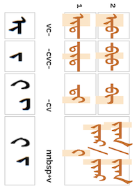 |
|
  |
|
|
| vc- | -cvc- | -cv | nnbsp+v | |
| 1 | ᠢᠲ᠊ | ᠊ᠲᠢᠲ᠊ | ᠊ᠲᠢ | ᠢ ᠢᠶᠠᠷ/ ᠢᠶᠡᠷ ᠢᠶᠠᠨ/ ᠢᠶᠡᠨ |
| 2 | ᠢᠪ᠊ | ᠊ᠪᠢᠪ᠊ | ᠊ᠪᠢ |
Variants
The following glyph changes should be produced by the font, without the need for variant selectors.
 . is used after n, m, l , s, sh, t, d, ch, j, y, r, w. is used after b, p, q, g, ts, dz, h. Note that q and b are in this group, since this is a neutral vowel. and are used after NNBSP.
. is used after n, m, l , s, sh, t, d, ch, j, y, r, w. is used after b, p, q, g, ts, dz, h. Note that q and b are in this group, since this is a neutral vowel. and are used after NNBSP.Other variants include a handwritten inner mongolian variant on the sequence yi  (medial),ws eg.
ᠰᠠᠶ᠋ᠢᠨ or
ᠰᠠᠶᠢᠨ
which is written
ᠰᠠᠢ᠋ᠨ
(medial),ws eg.
ᠰᠠᠶ᠋ᠢᠨ or
ᠰᠠᠶᠢᠨ
which is written
ᠰᠠᠢ᠋ᠨ
Historical variants include: (final for after NNBSP) and (final).
(final for after NNBSP) and (final).
Derived from
Old Uyghur yodh, preceded by an aleph for isolate and initial forms.ws
Chakhar i, ɪ
`, '\u{1823}': `ᠣ
ɔ ~ ə ATR- (back) vowel.
ᠣᠷᠳᠤ
ᠮᠣᠩᠭᠣᠯ
ᠪᠣᠭᠣ
Vowel combinations
This letter is used alongside other vowels in the following sequences:
ɔi is sometimes pronounced œ.
Shapes
Shaping depends on whether a letter is syllable-initial or syllable-final, but there are typically additional differences for word-initial and word-final syllables. Hint: to find the letters in the text examples, do an in-page search for the letter and highlight the results.
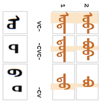 |
 |
  |
|
| vc- | -cvc- | -cv | |
| 1 | ᠣᠲ᠊ | ᠊ᠲᠣᠲ᠊ | ᠊ᠲᠣ |
| 2 | ᠣᠪ᠊ | ᠊ᠪᠣᠪ᠊ | ᠊ᠪᠣ |
Variants
The following glyph changes should be produced by the font, without the need for variant selectors.
is used after n, q, g, m, l , s, sh, t, d, ch, j, y, r, w. is used after b, p, ts, dz, h. Note that q and b are in the other group, since this is a feminine vowel.Other variants include (medial).
(medial).
Confusables
Derived from
Old Uyghur waw, preceded by an aleph for isolate and initial forms.ws
Chakhar ɔ
`, '\u{1824}': `ᠤ
ʊ ~ ə ATR- (back) vowel.
ᠤᠷᠲᠤ
ᠶᠠᠪᠤᠭᠤᠯᠬᠤ
ᠠᠪᠤ
Vowel combinations
This letter is used alongside other vowels in the following sequences:
Shapes
Shaping depends on whether a letter is syllable-initial or syllable-final, but there are typically additional differences for word-initial and word-final syllables. Hint: to find the letters in the text examples, do an in-page search for the letter and highlight the results.
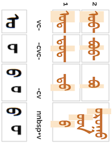 |
|
|
|
|
| vc- | -cvc- | -cv | nnbsp+v | |
| 1 | ᠤᠲ᠊ | ᠊ᠲᠤᠲ᠊ | ᠊ᠲᠤ | ᠤ ᠤᠳ ᠤᠷᠤᠭᠤ |
| 2 | ᠤᠪ᠊ | ᠊ᠪᠤᠪ᠊ | ᠊ᠪᠤ |
Variants
The following glyph changes should be produced by the font, without the need for variant selectors.
is used after n, q, g, m, l , s, sh, t, d, ch, j, y, r, w. is used after b, p, ts, dz, h. Note that q and b are in pattern 1, since this is a masculine vowel. and are used after NNBSP.Other variants include (medial), and or  (final & nnbsp).
(final & nnbsp).
Historical variants include  (medial) and
(medial) and  (final).
(final).
Confusables
Derived from
Old Uyghur waw, preceded by an aleph for isolate and initial forms.ws
Chakhar ʊ
`, '\u{1825}': `ᠥ
o ~ ə ATR+ (front) vowel.
ᠥᠨᠳᠡᠭᠡ
ᠲᠥᠮᠦᠰᠦ
ᠲᠥᠭᠥᠷᠢᠭ
Vowel combinations
This letter is used alongside other vowels in the following sequences:
Shapes
Shaping depends on whether a letter is syllable-initial or syllable-final, but there are typically additional differences for word-initial and word-final syllables. Hint: to find the letters in the text examples, do an in-page search for the letter and highlight the results.
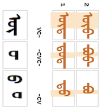 |
|
|
|
| vc- | -cvc- | -cv | |
| 1 | ᠥᠲ᠊ | ᠊ᠲᠥᠲ᠊ | ᠊ᠲᠥ |
| 2 | ᠥᠪ᠊ | ᠊ᠪᠥᠪ᠊ | ᠊ᠪᠥ |
Variants
The following glyph changes should be produced by the font, without the need for variant selectors.
is used after n, q, g, m, l , s, sh, t, d, ch, j, y, r, w. is used after b, p, ts, dz, h. Note that q and b are in the previous pattern, since this is a feminine vowel.Other variants include and
and  (medial), and
(medial), and  (final). The latter is an older form, also used in loanwords.ws
(final). The latter is an older form, also used in loanwords.ws
Historical variants include  (isolated),
(isolated),  (initial) and (final).
(initial) and (final).
Confusables
Derived from
Old Uyghur waw, in a digraph with yodh in word-initial syllables; preceded by an aleph for isolate and initial forms.ws
Chakhar o
`, '\u{1826}': `ᠦ
u ~ ə ATR+ (front) vowel.
ᠦᠵᠡᠬᠦ
ᠭᠦᠷᠦᠨ
Vowel combinations
This letter is used alongside other vowels in the following sequences:
Shapes
Shaping depends on whether a letter is syllable-initial or syllable-final, but there are typically additional differences for word-initial and word-final syllables. Hint: to find the letters in the text examples, do an in-page search for the letter and highlight the results.
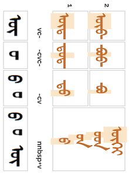 |
|
|
|
|
| vc- | -cvc- | -cv | nnbsp+v | |
| 1 | ᠦᠲ᠊ | ᠊ᠲᠦᠲ᠊ | ᠊ᠲᠦ | ᠦ ᠦᠨ ᠦᠳ ᠦᠭᠡᠢ |
| 2 | ᠦᠪ᠊ | ᠊ᠪᠦᠪ᠊ | ᠊ᠪᠦ |
Variants
The following glyph changes should be produced by the font, without the need for variant selectors.
is used after n, q, g, m, l , s, sh, t, d, ch, j, y, r, w. is used after b, p, q, g, ts, dz, h. Note that q and b are in pattern 2, since this is a feminine vowel., and are used after NNBSP.Other variants include (isolated), and (medial), and (final) and (final nnbsp). The latter is an older form, also used in loanwords.ws
Historical variants include (initial), (medial) and (final).
Confusables
Derived from
Old Uyghur waw, in a digraph with yodh in word-initial syllables; preceded by an aleph for isolate and initial forms.ws
Chakhar u
`, '\u{1827}': `ᠧ
i ~ e ~ ə vowel used for foreign loan words.
ᠲᠷᠣᠯᠯᠧᠶᠢᠪᠦ᠋ᠰ
ᠾᠧᠵᠢᠩ
ᠸᠢᠺᠢᠫᠧᠳᠢᠶᠠThis is an alternate form of ᠡ which is used for foreign loanwords.
Shapes
Shaping depends on whether a letter is syllable-initial or syllable-final, but there are typically additional differences for word-initial and word-final syllables. Hint: to find the letters in the text examples, do an in-page search for the letter and highlight the results.
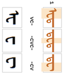 |
 |
 |
|
| vc- | -cvc- | -cv | |
| 1 | ᠧᠲ᠊ | ᠊ᠲᠧᠲ᠊ | ᠊ᠲᠧ |
Confusables
The medial and final forms of this letter are identical to those of ᠸ.
Chakhar ə
`, '\u{1828}': `ᠨ
n consonant.
ᠨᠣᠭᠤᠭᠠᠨ
ᠡᠬᠡᠨᠡᠷ
ᠡᠨᠳᠡ
ᠭᠠᠳᠠᠨᠠ
-ŋ in syllable-final position.
ᠣᠯᠠᠨ
Shapes
Shaping depends on whether a letter is syllable-initial or syllable-final, but there are typically additional differences for word-initial and word-final syllables. Hint: to find the letters in the text examples, do an in-page search for the letter and highlight the results.
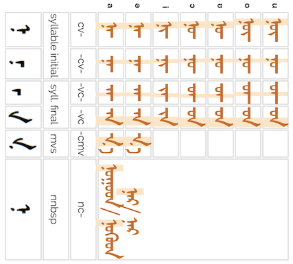 |
 |
 |
 |
 |
|
|
| syllable initial | syll. final | mvs | nnbsp | |||
| cv- | -cv- | -vc- | -vc | -cmv | nc- | |
| a | ᠨᠠ᠊ | ᠊ᠨᠠ᠊ | ᠊ᠠᠨ᠊ | ᠊ᠠᠨ | ᠊ᠨᠠ | ᠨᠤᠭᠤᠳ/ ᠨᠦᠭᠦᠳ ᠨᠠᠷ/ ᠨᠡᠷ |
| ə | ᠨᠡ᠊ | ᠊ᠨᠡ᠊ | ᠊ᠡᠨ᠊ | ᠊ᠡᠨ | ᠊ᠨᠡ | |
| i | ᠨᠢ᠊ | ᠊ᠨᠢ᠊ | ᠊ᠢᠨ᠊ | ᠊ᠢᠨ | ||
| ɔ | ᠨᠣ᠊ | ᠊ᠨᠣ᠊ | ᠊ᠣᠨ᠊ | ᠊ᠣᠨ | ||
| ʊ | ᠨᠤ᠊ | ᠊ᠨᠤ᠊ | ᠊ᠤᠨ᠊ | ᠊ᠤᠨ | ||
| o | ᠨᠥ᠊ | ᠊ᠨᠥ᠊ | ᠊ᠥᠨ᠊᠊ | ᠊ᠥᠨ | ||
| u | ᠨᠦ᠊ | ᠊ᠨᠦ᠊ | ᠊ᠦᠨ᠊᠊ | ᠊ᠦᠨ | ||
Variants
The following glyph changes should be produced by the font, without the need for variant selectors.
is used in medial syllable-initial positions, medial syllable final uses is used before U+180E MONGOLIAN VOWEL SEPARATOROther variants, requiring a variation selector:
(initial)Historical variants:
and  (the last is used for Todo NNBSP only)
(the last is used for Todo NNBSP only)


Confusables
Derived from
Old Uyghur nun.ws
Chakhar n, ŋ
`, '\u{1829}': `ᠩ
ŋ consonant, only used at end of word (medial form used for composites).
ᠱᠣᠩᠬᠤᠷ
ᠮᠠᠨᠠᠩ
Transcribes Tibetan U+0F44 TIBETAN LETTER NGA ང; Sanskrit U+0919 DEVANAGARI LETTER NGA ङ.
Shapes
Shaping depends on whether a letter is syllable-initial or syllable-final, but there are typically additional differences for word-initial and word-final syllables. Hint: to find the letters in the text examples, do an in-page search for the letter and highlight the results.
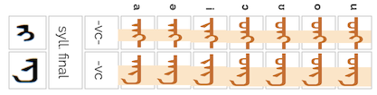 |
 |
|
| syll. final | ||
| -vc- | -vc | |
| a | ᠊ᠠᠩ᠊ | ᠊ᠠᠩ |
| ə | ᠊ᠡᠩ᠊ | ᠊ᠡᠩ |
| i | ᠊ᠢᠩ᠊ | ᠊ᠢᠩ |
| ɔ | ᠊ᠣᠩ᠊ | ᠊ᠣᠩ |
| ʊ | ᠊ᠤᠩ᠊ | ᠊ᠤᠩ |
| o | ᠊ᠥᠩ᠊ | ᠊ᠥᠩ |
| u | ᠊ᠦᠩ᠊ | ᠊ᠦᠩ |
Variants
There are no variants in normal Mongolian text, but the following historical variants are attested:


Derived from
Old Uyghur nun-kaph digraph.ws
Chakhar ŋ
`, '\u{182A}': `ᠪ
p ~ w consonant.
ᠪᠠᠷᠰ
ᠪᠦᠬᠦ
ᠤᠯᠠᠭᠠᠨᠪᠠᠭᠠᠲᠤᠷ
ᠰᠢᠪᠠᠭᠤ
ᠠᠷᠪᠠ
v when used to transcribe foreign words or classical Mongolian. This is the most common use of Cyrillic в in Mongolian.
Shapes
Shaping depends on whether a letter is syllable-initial or syllable-final, but there are typically additional differences for word-initial and word-final syllables. Hint: to find the letters in the text examples, do an in-page search for the letter and highlight the results.
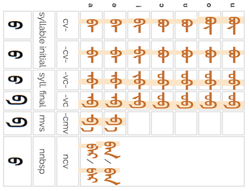 |
|
|
 |
|
|
|
| syllable initial | syll. final | mvs | nnbsp | |||
| cv- | -cv- | -vc- | -vc | -cmv | ncv | |
| a | ᠪᠠ᠊ | ᠊ᠪᠠ᠊ | ᠊ᠠᠪ᠊ | ᠊ᠠᠪ | ᠊ᠪᠠ | ᠪᠠᠷ/ ᠪᠡᠷ ᠪᠠᠨ/ ᠪᠡᠨ |
| ə | ᠪᠡ᠊ | ᠊ᠪᠡ᠊ | ᠊ᠡᠪ᠊ | ᠊ᠡᠪ | ᠊ᠪᠡ | |
| i | ᠪᠢ᠊ | ᠊ᠪᠢ᠊ | ᠊ᠢᠪ᠊ | ᠊ᠢᠪ | ||
| ɔ | ᠪᠣ᠊ | ᠊ᠪᠣ᠊ | ᠊ᠣᠪ᠊ | ᠊ᠣᠪ | ||
| ʊ | ᠪᠤ᠊ | ᠊ᠪᠤ᠊ | ᠊ᠤᠪ᠊ | ᠊ᠤᠪ | ||
| o | ᠪᠥ᠊ | ᠊ᠪᠥ᠊ | ᠊ᠥᠪ᠊ | ᠊ᠥᠪ | ||
| u | ᠪᠦ᠊ | ᠊ᠪᠦ᠊ | ᠊ᠦᠪ᠊ | ᠊ᠦᠪ | ||
Variants
The following glyph changes should be produced by the font, without the need for variant selectors:
Other variants, requiring a variation selector:
 , an older variant form.ws
, an older variant form.wsDerived from
Old Uyghur pe.ws
Chakhar b
`, '\u{182B}': `ᠫ
pʰ consonant.
ᠫᠢᠸᠣ᠋
ᠸᠢᠺᠢᠫᠧᠳᠢᠶᠠ
Mostly used for foriegn words. One source says mostly used at the beginning of foreign wordsws, but another indicates use in medial and final positions only.
Transcribes པ U+0F54 TIBETAN LETTER PA.
Shapes
Shaping depends on whether a letter is syllable-initial or syllable-final, but there are typically additional differences for word-initial and word-final syllables. Hint: to find the letters in the text examples, do an in-page search for the letter and highlight the results.
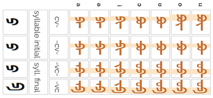 |
|
|
 |
|
| syllable initial | syll. final | |||
| cv- | -cv- | -vc- | -vc | |
| a | ᠫᠠ᠊ | ᠊ᠫᠠ᠊ | ᠊ᠠᠫ᠊ | ᠊ᠠᠫ |
| ə | ᠫᠡ᠊ | ᠊ᠫᠡ᠊ | ᠊ᠡᠫ᠊ | ᠊ᠡᠫ |
| i | ᠫᠢ᠊ | ᠊ᠫᠢ᠊ | ᠊ᠢᠫ᠊ | ᠊ᠢᠫ |
| ɔ | ᠫᠣ᠊ | ᠊ᠫᠣ᠊ | ᠊ᠣᠫ᠊ | ᠊ᠣᠫ |
| ʊ | ᠫᠤ᠊ | ᠊ᠫᠤ᠊ | ᠊ᠤᠫ᠊ | ᠊ᠤᠫ |
| o | ᠫᠥ᠊ | ᠊ᠫᠥ᠊ | ᠊ᠥᠫ᠊ | ᠊ᠥᠫ |
| u | ᠫᠦ᠊ | ᠊ᠫᠦ᠊ | ᠊ᠦᠫ᠊ | ᠊ᠦᠫ |
Variants
The following glyph changes should be produced by the font, without the need for variant selectors.
Derived from
The letter BA as a Galik letter.ws
Chakhar p
`, '\u{182C}': `ᠬ
x consonant. Mostly used in masculine words.
ᠬᠠᠭᠠᠨ
ᠬᠡᠦᠬᠡᠳ
ᠬᠣᠷᠤᠬᠠᠢ
ᠮᠡᠯᠡᠬᠡᠢ
ᠮᠡᠳᠡᠬᠦ
ᠤᠳᠬᠠ
Appears to be used only before a vowel.
Shapes
Shaping depends on whether a letter is syllable-initial or syllable-final, but there are typically additional differences for word-initial and word-final syllables. Hint: to find the letters in the text examples, do an in-page search for the letter and highlight the results.
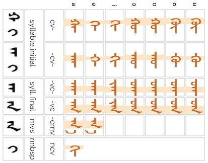  |
|
|
 |
|
|
|
| syllable initial | syll. final | mvs | nnbsp | |||
| cv- | -cv- | -vc- | -vc | -cmv | ncv | |
| a | ᠬᠠ᠊ | ᠊ᠬᠠ᠊ | ᠊ᠠᠬ᠊ | ᠊ᠠᠬ | ᠊ᠬᠠ | ᠬᠢ᠊ |
| ə | ᠬᠡ᠊ | ᠊ᠬᠡ᠊ | ᠊ᠡᠬ᠊ | ᠊ᠡᠬ | ᠊ᠬᠡ | |
| i | ᠬᠢ᠊ | ᠊ᠬᠢ᠊ | ᠊ᠢᠬ᠊ | ᠊ᠢᠬ | ||
| ɔ | ᠬᠣ᠊ | ᠊ᠬᠣ᠊ | ᠊ᠣᠬ᠊ | ᠊ᠣᠬ | ||
| ʊ | ᠬᠤ᠊ | ᠊ᠬᠤ᠊ | ᠊ᠤᠬ᠊ | ᠊ᠤᠬ | ||
| o | ᠬᠥ᠊ | ᠊ᠬᠥ᠊ | ᠊ᠥᠬ᠊ | ᠊ᠥᠬ | ||
| u | ᠬᠦ᠊ | ᠊ᠬᠦ᠊ | ᠊ᠦᠬ᠊ | ᠊ᠦᠬ | ||
Variants
The following glyph changes should be produced by the font, without the need for variant selectors.
forms ligatures with o, and u.Other variants, requiring a variation selector:


Confusables
Derived from
Old Uyghur merger of gimel and hath (masculine) or kaph (feminine).ws
Chakhar x
`, '\u{182D}': `ᠭ
∅ typically elided when used between two vowels (unless reading classical literary Mongolian), usually leaving a long vowel. Click on the following examples to see the elided letters.
ᠬᠠᠭᠠᠨ
ᠠᠭᠤᠯᠠ
ᠡᠭᠦᠯᠡ
ᠰᠢᠷᠡᠭᠡ
Some exceptions exist, such as
ᠴᠠᠭᠠᠨ
ɢ ~ ɣ before back vowels.
ᠭᠠᠬᠠᠢ
ᠮᠠᠯᠭᠠᠢ
ᠵᠣᠭᠰᠤᠬᠤ
ᠲᠠᠶᠠᠭ
ᠮᠣᠭᠠᠢ
ᠵᠥᠭᠡᠢ
ᠢᠮᠠᠭᠠ
g ~ k before front vowels or non-vowels.
ᠭᠡᠷᠭᠡᠢ
ᠥᠭᠬᠦ
ᠪᠡᠯᠡᠭ
ᠲᠥᠭᠥᠷᠢᠭ
ᠥᠷᠭᠡᠨ
Shapes
Shaping depends on whether a letter is syllable-initial or syllable-final, but there are typically additional differences for word-initial and word-final syllables. Hint: to find the letters in the text examples, do an in-page search for the letter and highlight the results.
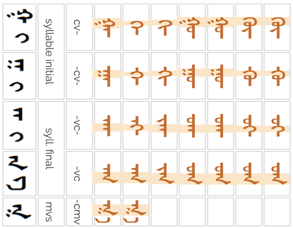 |
|
|
 |
|
|
| syllable initial | syll. final | mvs | |||
| cv- | -cv- | -vc- | -vc | -cmv | |
| a | ᠭᠠ᠊ | ᠊ᠭᠠ᠊ | ᠊ᠠᠭ᠊ | ᠊ᠠᠭ | ᠊ᠭᠠ |
| ə | ᠭᠡ᠊ | ᠊ᠭᠡ᠊ | ᠊ᠡᠭ᠊ | ᠊ᠡᠭ | ᠊ᠭᠡ |
| i | ᠭᠢ᠊ | ᠊ᠭᠢ᠊ | ᠊ᠢᠭ᠊ | ᠊ᠢᠭ | |
| ɔ | ᠭᠣ᠊ | ᠊ᠭᠣ᠊ | ᠊ᠣᠭ᠊ | ᠊ᠣᠭ | |
| ʊ | ᠭᠤ᠊ | ᠊ᠭᠤ᠊ | ᠊ᠤᠭ᠊ | ᠊ᠤᠭ | |
| o | ᠭᠥ᠊ | ᠊ᠭᠥ᠊ | ᠊ᠥᠭ᠊ | ᠊ᠥᠭ | |
| u | ᠭᠦ᠊ | ᠊ᠭᠦ᠊ | ᠊ᠦᠭ᠊ | ᠊ᠦᠭ | |
Variants
The following glyph changes should be produced by the font, without the need for variant selectors.
forms ligatures with o, and u. is used between vowels. The one with no dots
is used between vowels. The one with no dots  is used when followed by a consonant.
is used when followed by a consonant. is used before U+180E MONGOLIAN VOWEL SEPARATOR.
is used before U+180E MONGOLIAN VOWEL SEPARATOR.As an example of a situation where a variant selector is needed, consider the following word.
ᠭ᠋ᠠᠯ
The first variant selector is needed immediately after the first letter, g, to prevent the standard two dots appearing (ᠭᠠᠯ is incorrect).
Other variants, requiring a variation selector:
Historical variants:
Confusables
Derived from
Old Uyghur merger of gimel and hath (masculine) or kaph (feminine).ws
`, '\u{182E}': `ᠮ
m consonant.
ᠮᠤᠤᠷ
ᠨᠢᠮᠭᠡᠨ
ᠨᠠᠮᠤᠷ
ᠵᠠᠮ
Shapes
Shaping depends on whether a letter is syllable-initial or syllable-final, but there are typically additional differences for word-initial and word-final syllables. Hint: to find the letters in the text examples, do an in-page search for the letter and highlight the results.
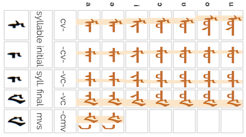 |
 |
|
 |
|
|
| syllable initial | syll. final | mvs | |||
| cv- | -cv- | -vc- | -vc | -cmv | |
| a | ᠮᠠ᠊ | ᠊ᠮᠠ᠊ | ᠊ᠠᠮ᠊ | ᠊ᠠᠮ | ᠊ᠮᠠ |
| ə | ᠮᠡ᠊ | ᠊ᠮᠡ᠊ | ᠊ᠡᠮ᠊ | ᠊ᠡᠮ | ᠊ᠮᠡ |
| i | ᠮᠢ᠊ | ᠊ᠮᠢ᠊ | ᠊ᠢᠮ᠊ | ᠊ᠢᠮ | |
| ɔ | ᠮᠣ᠊ | ᠊ᠮᠣ᠊ | ᠊ᠣᠮ᠊ | ᠊ᠣᠮ | |
| ʊ | ᠮᠤ᠊ | ᠊ᠮᠤ᠊ | ᠊ᠤᠮ᠊ | ᠊ᠤᠮ | |
| o | ᠮᠥ᠊ | ᠊ᠮᠥ᠊ | ᠊ᠥᠮ᠊ | ᠊ᠥᠮ | |
| u | ᠮᠦ᠊ | ᠊ᠮᠦ᠊ | ᠊ᠦᠮ᠊ | ᠊ᠦᠮ | |
Variants
According to Wikipediaws, there is a ligated form when m is followed by l medially.
Derived from
Old Uyghur mem.ws
Chakhar m
`, '\u{182F}': `ᠯ
ɮ consonant.
ᠯᠢᠷ
ᠠᠯᠲᠠ
ᠪᠣᠳᠤᠯ
Shapes
Shaping depends on whether a letter is syllable-initial or syllable-final, but there are typically additional differences for word-initial and word-final syllables. Hint: to find the letters in the text examples, do an in-page search for the letter and highlight the results.
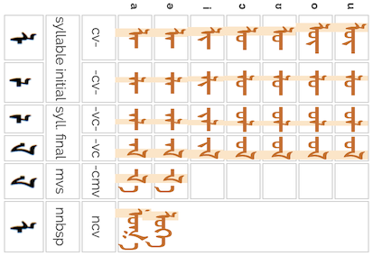 |
 |
|
 |
|
|
|
| syllable initial | syll. final | mvs | nnbsp | |||
| cv- | -cv- | -vc- | -vc | -cmv | ncv | |
| a | ᠯᠠ᠊ | ᠊ᠯᠠ᠊ | ᠊ᠠᠯ᠊ | ᠊ᠠᠯ | ᠊ᠯᠠ | ᠯᠤᠭᠠ ᠯᠦᠭᠡ |
| ə | ᠯᠡ᠊ | ᠊ᠯᠡ᠊ | ᠊ᠡᠯ᠊ | ᠊ᠡᠯ | ᠊ᠯᠡ | |
| i | ᠯᠢ᠊ | ᠊ᠯᠢ᠊ | ᠊ᠢᠯ᠊ | ᠊ᠢᠯ | ||
| ɔ | ᠯᠣ᠊ | ᠊ᠯᠣ᠊ | ᠊ᠣᠯ᠊ | ᠊ᠣᠯ | ||
| ʊ | ᠯᠤ᠊ | ᠊ᠯᠤ᠊ | ᠊ᠤᠯ᠊ | ᠊ᠤᠯ | ||
| o | ᠯᠥ᠊ | ᠊ᠯᠥ᠊ | ᠊ᠥᠯ᠊ | ᠊ᠥᠯ | ||
| u | ᠯᠦ᠊ | ᠊ᠯᠦ᠊ | ᠊ᠦᠯ᠊ | ᠊ᠦᠯ |
|
|
Variants
The following glyph changes should be produced by the font, without the need for variant selectors.
Ligated forms occur when l follows a bow-shaped consonant in loanwordsws, such as ᠪᠯᠠᠮᠠ blam-a lama
(This ligature is produced by Baiti and Noto fonts, but not by Universal White.)
Derived from
Old Uyghur hooked resh.ws
Chakhar l
`, '\u{1830}': `ᠰ
s ~ ʃ
ᠰᠠᠯᠬᠢ
ᠬᠢᠮᠤᠰᠤ
ᠨᠢᠰᠬᠦ
ᠲᠣᠭᠤᠰ
ᠰᠢᠪᠠᠭᠤ
ᠰᠢᠷᠡᠭᠡ
It is pronounced ʃ before i, but also occurs before other vowels.
Shapes
Shaping depends on whether a letter is syllable-initial or syllable-final, but there are typically additional differences for word-initial and word-final syllables. Hint: to find the letters in the text examples, do an in-page search for the letter and highlight the results.
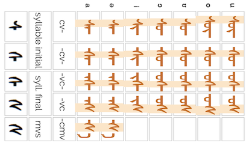 |
 |
|
 |
|
|
| syllable initial | syll. final | mvs | |||
| cv- | -cv- | -vc- | -vc | -cmv | |
| a | ᠰᠠ᠊ | ᠊ᠰᠠ᠊ | ᠊ᠠᠰ᠊ | ᠊ᠠᠰ | ᠊ᠰᠠ |
| ə | ᠰᠡ᠊ | ᠊ᠰᠡ᠊ | ᠊ᠡᠰ᠊ | ᠊ᠡᠰ | ᠊ᠰᠡ |
| i | ᠰᠢ᠊ | ᠊ᠰᠢ᠊ | ᠊ᠢᠰ᠊ | ᠊ᠢᠰ | |
| ɔ | ᠰᠣ᠊ | ᠊ᠰᠣ᠊ | ᠊ᠣᠰ᠊ | ᠊ᠣᠰ | |
| ʊ | ᠰᠤ᠊ | ᠊ᠰᠤ᠊ | ᠊ᠤᠰ᠊ | ᠊ᠤᠰ | |
| o | ᠰᠥ᠊ | ᠊ᠰᠥ᠊ | ᠊ᠥᠰ᠊ | ᠊ᠥ᠊ᠰ | |
| u | ᠰᠦ᠊ | ᠊ᠰᠦ᠊ | ᠊ᠦᠰ᠊ | ᠊ᠦᠰ | |
Variants
The following glyph changes require variation selectors.
 is an older final variant derived from old uyghur zayin (though sometimes rendered as as a purely stylistic preference), eg. ᠴᠢᠩᠭᠢᠰ᠋ činggis on the Stele of Yisünggews.
is an older final variant derived from old uyghur zayin (though sometimes rendered as as a purely stylistic preference), eg. ᠴᠢᠩᠭᠢᠰ᠋ činggis on the Stele of Yisünggews. is used in Manchu, but not traditional Mongolian.
is used in Manchu, but not traditional Mongolian.Derived from
Old Uyghur merged samekh and shin.ws
Chakhar s, ʃ
`, '\u{1831}': `ᠱ
ʃ
ᠱᠣᠩᠬᠤᠷ
ᠮᠠᠱᠢᠨ
Shapes
Shaping depends on whether a letter is syllable-initial or syllable-final, but there are typically additional differences for word-initial and word-final syllables. Hint: to find the letters in the text examples, do an in-page search for the letter and highlight the results.
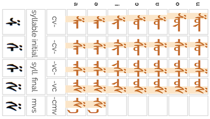 |
 |
|
 |
|
|
| syllable initial | syll. final | mvs | |||
| cv- | -cv- | -vc- | -vc | -cmv | |
| a | ᠱᠠ᠊ | ᠊ᠱᠠ᠊ | ᠊ᠠᠱ᠊ | ᠊ᠠᠱ | ᠊ᠱᠠ |
| ə | ᠱᠡ᠊ | ᠊ᠱᠡ᠊ | ᠊ᠡᠱ᠊ | ᠊ᠡᠱ | ᠊ᠱᠡ |
| i | ᠱᠢ᠊ | ᠊ᠱᠢ᠊ | ᠊ᠢᠱ᠊ | ᠊ᠢᠱ | |
| ɔ | ᠱᠣ᠊ | ᠊ᠱᠣ᠊ | ᠊ᠣᠱ᠊ | ᠊ᠣᠱ | |
| ʊ | ᠱᠤ᠊ | ᠊ᠱᠤ᠊ | ᠊ᠤᠱ᠊ | ᠊ᠤᠱ | |
| o | ᠱᠥ᠊ | ᠊ᠱᠥ᠊ | ᠊ᠥᠱ᠊ | ᠊ᠥᠱ | |
| u | ᠱᠦ᠊ | ᠊ᠱᠦ᠊ | ᠊ᠦᠱ᠊ | ᠊ᠦᠱ | |
Derived from
Old Uyghur merged samekh and shin.ws
Chakhar ʃ
`, '\u{1832}': `ᠲ
tʰ consonant.
ᠲᠥᠮᠦᠰᠦ
ᠠᠯᠲᠠ
This character is not used in word or syllable final position for Mongolian words.
Shapes
Shaping depends on whether a letter is syllable-initial or syllable-final, but there are typically additional differences for word-initial and word-final syllables. Hint: to find the letters in the text examples, do an in-page search for the letter and highlight the results.
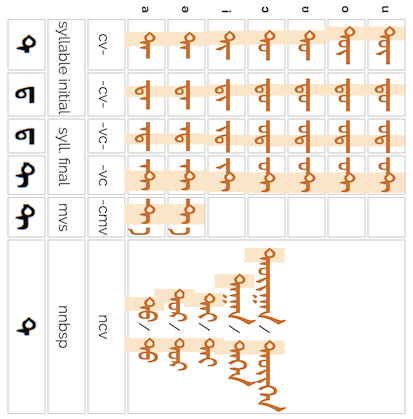 |
 |
|
 |
|
|
|
| syllable initial | syll. final | mvs | nnbsp | |||
| cv- | -cv- | -vc- | -vc | -cmv | ncv | |
| a | ᠲᠠ᠊ | ᠊ᠲᠠ᠊ | ᠊ᠠᠲ᠊ | ᠊ᠠᠲ | ᠊ᠲᠠ | ᠲᠤ/ ᠲᠦ ᠲᠤᠷ/ ᠲᠦᠷ ᠲᠠᠢ/ ᠲᠡᠢ ᠲᠠᠭᠠᠨ/ ᠲᠡᠭᠡᠨ ᠲᠠᠦᠶᠢᠭᠠᠨ/ ᠲᠡᠦᠶᠢᠭᠡᠨ |
| ə | ᠲᠡ᠊ | ᠊ᠲᠡ᠊ | ᠊ᠡᠲ᠊ | ᠊ᠡᠲ | ᠊ᠲᠡ | |
| i | ᠲᠢ᠊ | ᠊ᠲᠢ᠊ | ᠊ᠢᠲ᠊ | ᠊ᠢᠲ | ||
| ɔ | ᠲᠣ᠊ | ᠊ᠲᠣ᠊ | ᠊ᠣᠲ᠊ | ᠊ᠣᠲ | ||
| ʊ | ᠲᠤ᠊ | ᠊ᠲᠤ᠊ | ᠊ᠤᠲ᠊ | ᠊ᠤᠲ | ||
| o | ᠲᠥ᠊ | ᠊ᠲᠥ᠊ | ᠊ᠥᠲ᠊ | ᠊ᠥᠲ | ||
| u | ᠲᠦ᠊ | ᠊ᠲᠦ᠊ | ᠊ᠦᠲ᠊ | ᠊ᠦᠲ | ||
Variants
Other variants, requiring a variation selector:
.Confusables:In word or syllable initial position it is visually identical to ᠳ.
Derived from
Old Uyghur taw (initial form) and lamedh (medial form).ws
Chakhar t
`, '\u{1833}': `ᠳ
t consonant.
ᠳᠤᠮᠳᠠᠳᠤ ᠤᠯᠤᠰ
ᠤᠳᠬᠠ
ᠬᠡᠦᠬᠡᠳ
Shapes
Shaping depends on whether a letter is syllable-initial or syllable-final, but there are typically additional differences for word-initial and word-final syllables. Hint: to find the letters in the text examples, do an in-page search for the letter and highlight the results.
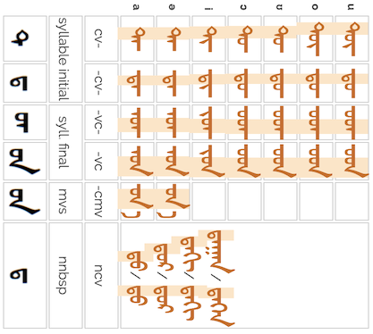 |
|
 |
 |
|
|
|
| syllable initial | syll. final | mvs | nnbsp | |||
| cv- | -cv- | -vc- | -vc | -cmv | ncv | |
| a | ᠳᠠ᠊ | ᠊ᠳᠠ᠊ | ᠊ᠠᠳ᠊ | ᠊ᠠᠳ | ᠊ᠳᠠ | ᠳᠤ/ ᠳᠦ ᠳᠤᠷ/ ᠳᠦᠷ ᠳᠠᠬᠢ/ ᠳᠡᠬᠢ ᠳᠠᠭᠠᠨ/ ᠳᠡᠭᠡᠨ |
| ə | ᠳᠡ᠊ | ᠊ᠳᠡ᠊ | ᠊ᠡᠳ᠊ | ᠊ᠡᠳ | ᠊ᠳᠡ | |
| i | ᠳᠢ᠊ | ᠊ᠳᠢ᠊ | ᠊ᠢᠳ᠊ | ᠊ᠢᠳ | ||
| ɔ | ᠳᠣ᠊ | ᠊ᠳᠣ᠊ | ᠊ᠣᠳ᠊ | ᠊ᠣᠳ | ||
| ʊ | ᠳᠤ᠊ | ᠊ᠳᠤ᠊ | ᠊ᠤᠳ᠊ | ᠊ᠤᠳ | ||
| o | ᠳᠥ᠊ | ᠊ᠳᠥ᠊ | ᠊ᠥᠳ᠊ | ᠊ᠥᠳ | ||
| u | ᠳᠦ᠊ | ᠊ᠳᠦ᠊ | ᠊ᠦᠳ᠊ | ᠊ᠦᠳ | ||
Variants
The following glyph change should be produced by the font, without the need for variant selectors.
is used before a vowel, and is used at the end of a syllable. is used before U+180E MONGOLIAN VOWEL SEPARATOR.Other variants, requiring a variation selector:
 in final position, both used for foreign words.ws
in final position, both used for foreign words.wsConfusables:In word or syllable initial position it is visually identical to ᠲ.
Derived from
Old Uyghur taw (initial form) and lamedh (medial form).ws
Chakhar d
`, '\u{1834}': `ᠴ
tsʰ ~ ʧʰ consonant.
ᠴᠠᠭᠠᠨ
ᠴᠡᠴᠡᠭ
ᠪᠢᠴᠢᠭᠡᠴᠢ
ts is used in Modern Mongolian owing to phonetic change in the Khalka dialect.
Shapes
Shaping depends on whether a letter is syllable-initial or syllable-final, but there are typically additional differences for word-initial and word-final syllables. Hint: to find the letters in the text examples, do an in-page search for the letter and highlight the results.
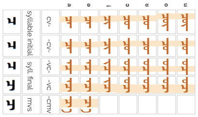 |
|
|
 |
|
|
| syllable initial | syll. final | mvs | |||
| cv- | -cv- | -vc- | -vc | -cmv | |
| a | ᠴᠠ᠊ | ᠊ᠴᠠ᠊ | ᠊ᠠᠴ᠊ | ᠊ᠠᠴ | ᠊ᠴᠠ |
| ə | ᠴᠡ᠊ | ᠊ᠴᠡ᠊ | ᠊ᠡᠴ᠊ | ᠊ᠡᠴ | ᠊ᠴᠡ |
| i | ᠴᠢ᠊ | ᠊ᠴᠢ᠊ | ᠊ᠢᠴ᠊ | ᠊ᠢᠴ | |
| ɔ | ᠴᠣ᠊ | ᠊ᠴᠣ᠊ | ᠊ᠣᠴ᠊ | ᠊ᠣᠴ | |
| ʊ | ᠴᠤ᠊ | ᠊ᠴᠤ᠊ | ᠊ᠤᠴ᠊ | ᠊ᠤᠴ | |
| o | ᠴᠥ᠊ | ᠊ᠴᠥ᠊ | ᠊ᠥᠴ᠊ | ᠊ᠥᠴ | |
| u | ᠴᠦ᠊ | ᠊ᠴᠦ᠊ | ᠊ᠦᠴ᠊ | ᠊ᠦᠴ | |
Variants
Historical variants:
 ,
,  , and
, and Derived from
Old Uyghur tsade.ws
Chakhar ʧʰ
`, '\u{1835}': `ᠵ
t͡s ~ t͡ʃ consonant.
ᠵᠤᠵᠠᠭᠠᠨ
ᠡᠯᠵᠢᠭᠡ
dz is used in Modern Mongolian owing to phonetic change in the Khalka dialect.
Shapes
Shaping depends on whether a letter is syllable-initial or syllable-final, but there are typically additional differences for word-initial and word-final syllables. Hint: to find the letters in the text examples, do an in-page search for the letter and highlight the results.
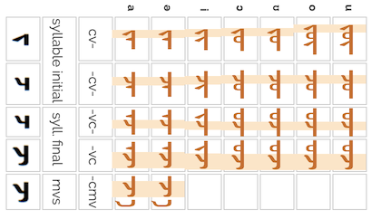 |
|
|
 |
|
|
| syllable initial | syll. final | mvs | |||
| cv- | -cv- | -vc- | -vc | -cmv | |
| a | ᠵᠠ᠊ | ᠊ᠵᠠ᠊ | ᠊ᠠᠵ᠊ | ᠊ᠠᠵ | ᠊ᠵᠠ |
| ə | ᠵᠡ᠊ | ᠊ᠵᠡ᠊ | ᠊ᠡᠵ᠊ | ᠊ᠡᠵ | ᠊ᠵᠡ |
| i | ᠵᠢ᠊ | ᠊ᠵᠢ᠊ | ᠊ᠢᠵ᠊ | ᠊ᠢᠵ | |
| ɔ | ᠵᠣ᠊ | ᠊ᠵᠣ᠊ | ᠊ᠣᠵ᠊ | ᠊ᠣᠵ | |
| ʊ | ᠵᠤ᠊ | ᠊ᠵᠤ᠊ | ᠊ᠤᠵ᠊ | ᠊ᠤᠵ | |
| o | ᠵᠥ᠊ | ᠊ᠵᠥ᠊ | ᠊ᠥᠵ᠊ | ᠊ᠥᠵ | |
| u | ᠵᠦ᠊ | ᠊ᠵᠦ᠊ | ᠊ᠦᠵ᠊ | ᠊ᠦᠵ | |
Variants
Variants, requiring a variation selector:
. However, this is produced automatically by Baiti, Universal White, and Noto fonts before an MVS when the JA has nothing preceding it. Otherwise, the form shown in the chart is shown. Wikipedia, on the other hand, shows ᠵᠠ᠋.Historical variants:
, , and Derived from
Old Uyghur yodh (initial) and tsade (medial).ws
Chakhar ʤ
`, '\u{1836}': `ᠶ
j consonant.
ᠶᠠᠰ
ᠣᠶᠤᠬᠤ
ᠠᠶᠢᠮᠠᠭ
ᠨᠣᠬᠠᠶ
Not used in syllable final position, except before MVS. (?)
Shapes
Shaping depends on whether a letter is syllable-initial or syllable-final, but there are typically additional differences for word-initial and word-final syllables. Hint: to find the letters in the text examples, do an in-page search for the letter and highlight the results.
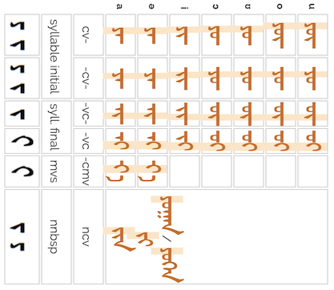 |
|
|
|
|
|
|
| syllable initial | syll. final | mvs | nnbsp | |||
| cv- | -cv- | -vc- | -vc | -cmv | ncv | |
| a | ᠶᠠ᠊ | ᠊ᠶᠠ᠊ | ᠊ᠠᠶ᠊ | ᠊ᠠᠶ | ᠊ᠶᠠ | ᠶᠢᠨ ᠶᠢ ᠶᠤᠭᠠᠨ/ ᠶᠦᠭᠡᠨ |
| ə | ᠶᠡ᠊ | ᠊ᠶᠡ᠊ | ᠊ᠡᠶ᠊ | ᠊ᠡᠶ | ᠊ᠶᠡ | |
| i | ᠶᠢ᠊ | ᠊ᠶᠢ᠊ | ᠊ᠢᠶ᠊ | ᠊ᠢᠶ | ||
| ɔ | ᠶᠣ᠊ | ᠊ᠶᠣ᠊ | ᠊ᠣᠶ᠊ | ᠊ᠣᠶ | ||
| ʊ | ᠶᠤ᠊ | ᠊ᠶᠤ᠊ | ᠊ᠤᠶ᠊ | ᠊ᠤᠶ | ||
| o | ᠶᠥ᠊ | ᠊ᠶᠥ᠊ | ᠊ᠥᠶ᠊ | ᠊ᠥᠶ | ||
| u | ᠶᠦ᠊ | ᠊ᠶᠦ᠊ | ᠊ᠦᠶ᠊ | ᠊ᠦᠶ | ||
Variants
The following glyph changes should be produced by the font, without the need for variant selectors.
(ie. no upturn to the left) is used when followed by ᠢ. when followed by ᠢ is produced by the Mongolian Baiti font, but not Mongolian White or Noto Sans Mongolian.Historic variants:
Derived from
Old Uyghur yodh (and distinguished from JA in the 19thC by borrowing Manchu hooked yodh).ws
Chakhar j
`, '\u{1837}': `ᠷ
r consonant.
ᠢᠷᠡᠬᠦ
ᠡᠷᠭᠢᠬᠦ
ᠡᠳᠦᠷ
Not normally used at the beginning of Mongolian words. Transcribed foreign words usually get a vowel prepended, for example, transcribing Русь (Russia) results in Oros.
Shapes
Shaping depends on whether a letter is syllable-initial or syllable-final, but there are typically additional differences for word-initial and word-final syllables. Hint: to find the letters in the text examples, do an in-page search for the letter and highlight the results.
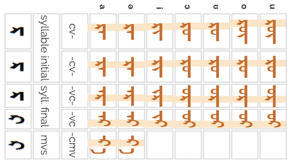 |
|
|
 |
|
|
| syllable initial | syll. final | mvs | |||
| cv- | -cv- | -vc- | -vc | -cmv | |
| a | ᠷᠠ᠊ | ᠊ᠷᠠ᠊ | ᠊ᠠᠷ᠊ | ᠊ᠠᠷ | ᠊ᠷᠠ |
| ə | ᠷᠡ᠊ | ᠊ᠷᠡ᠊ | ᠊ᠡᠷ᠊ | ᠊ᠡᠷ | ᠊ᠷᠡ |
| i | ᠷᠢ᠊ | ᠊ᠷᠢ᠊ | ᠊ᠢᠷ᠊ | ᠊ᠢᠷ | |
| ɔ | ᠷᠣ᠊ | ᠊ᠷᠣ᠊ | ᠊ᠣᠷ᠊ | ᠊ᠣᠷ | |
| ʊ | ᠷᠤ᠊ | ᠊ᠷᠤ᠊ | ᠊ᠤᠷ᠊ | ᠊ᠤᠷ | |
| o | ᠷᠥ᠊ | ᠊ᠷᠥ᠊ | ᠊ᠥᠷ᠊ | ᠊ᠥᠷ | |
| u | ᠷᠦ᠊ | ᠊ᠷᠦ᠊ | ᠊ᠦᠷ᠊ | ᠊ᠦᠷ | |
Derived from
Old Uyghur resh.ws
Chakhar r
`, '\u{1838}': `ᠸ
w consonant.
ᠸᠠᠩ
ᠫᠢᠸᠣ᠋
Used to transcribe foreign words. (Originally used to transcribe Sanskrit U+0935 DEVANAGARI LETTER VA व.)
Not used in syllable final position, except before MVS.
Shapes
Shaping depends on whether a letter is syllable-initial or syllable-final, but there are typically additional differences for word-initial and word-final syllables. Hint: to find the letters in the text examples, do an in-page search for the letter and highlight the results.
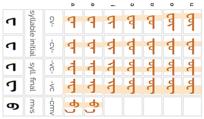 |
|
|
|
|
|
| syllable initial | syll. final | mvs | |||
| cv- | -cv- | -vc- | -vc | -cmv | |
| a | ᠸᠠ᠊ | ᠊ᠸᠠ᠊ | ᠊ᠠᠸ᠊ | ᠊ᠠᠸ | ᠊ᠸᠠ |
| ə | ᠸᠡ᠊ | ᠊ᠸᠡ᠊ | ᠊ᠡᠸ᠊ | ᠊ᠡᠸ | ᠊ᠸᠡ |
| i | ᠸᠢ᠊ | ᠊ᠸᠢ᠊ | ᠊ᠢᠸ᠊ | ᠊ᠢᠸ | |
| ɔ | ᠸᠣ᠊ | ᠊ᠸᠣ᠊ | ᠊ᠣᠸ᠊ | ᠊ᠣᠸ | |
| ʊ | ᠸᠤ᠊ | ᠊ᠸᠤ᠊ | ᠊ᠤᠸ᠊ | ᠊ᠤᠸ | |
| o | ᠸᠥ᠊ | ᠊ᠸᠥ᠊ | ᠊ᠥᠸ᠊ | ᠊ᠥᠸ | |
| u | ᠸᠦ᠊ | ᠊ᠸᠦ᠊ | ᠊ᠦᠸ᠊ | ᠊ᠦᠸ | |
Variants
The following glyph changes should be produced by the font, without the need for variant selectors.
 is used before U+180E MONGOLIAN VOWEL SEPARATOR by Baiti and Universal White fonts but by Noto.
is used before U+180E MONGOLIAN VOWEL SEPARATOR by Baiti and Universal White fonts but by Noto.Variants, requiring a variation selector:
Confusables: The medial and final forms of this letter are identical to those of ᠧ.
Derived from
Old Uyghur beh and waw before a separated vowel.ws
Chakhar w, v
`, '\u{1839}': `ᠹ
f consonant.
ᠱᠠᠹᠠ
ᠺᠣᠹᠧ
Used to transcribe foreign words, such as Tibetan ཕ pʰ.
Shapes
Shaping depends on whether a letter is syllable-initial or syllable-final, but there are typically additional differences for word-initial and word-final syllables. Hint: to find the letters in the text examples, do an in-page search for the letter and highlight the results.
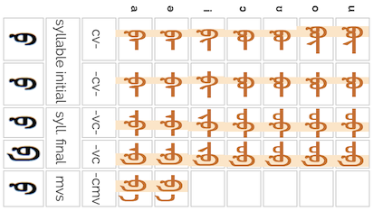 |
|
|
 |
|
|
| syllable initial | syll. final | mvs | |||
| cv- | -cv- | -vc- | -vc | -cmv | |
| a | ᠹᠠ᠊ | ᠊ᠹᠠ᠊ | ᠊ᠠᠹ᠊ | ᠊ᠠᠹ | ᠊ᠹᠠ |
| ə | ᠹᠡ᠊ | ᠊ᠹᠡ᠊ | ᠊ᠡᠹ᠊ | ᠊ᠡᠹ | ᠊ᠹᠡ |
| i | ᠹᠢ᠊ | ᠊ᠹᠢ᠊ | ᠊ᠢᠹ᠊ | ᠊ᠢᠹ | |
| ɔ | ᠹᠣ᠊ | ᠊ᠹᠣ᠊ | ᠊ᠣᠹ᠊ | ᠊ᠣᠹ | |
| ʊ | ᠹᠤ᠊ | ᠊ᠹᠤ᠊ | ᠊ᠤᠹ᠊ | ᠊ᠤᠹ | |
| o | ᠹᠥ᠊ | ᠊ᠹᠥ᠊ | ᠊ᠥᠹ᠊ | ᠊ᠥᠹ | |
| u | ᠹᠦ᠊ | ᠊ᠹᠦ᠊ | ᠊ᠦᠹ᠊ | ᠊ᠦᠹ | |
Variants
The following glyph changes should be produced by the font, without the need for variant selectors.
Derived from
Galik letter, originally from Mongolian b.ws
Chakhar f
`, '\u{183A}': `ᠺ
k consonant.
ᠺᠢᠨᠣ᠋
ᠺᠣᠹᠧ
ᠸᠢᠺᠢᠫᠧᠳᠢᠶᠠ
Used to transcribe foreign words (originally for Tibetan ག ga and Sanskrit ग ga).
Shapes
Shaping depends on whether a letter is syllable-initial or syllable-final, but there are typically additional differences for word-initial and word-final syllables. Hint: to find the letters in the text examples, do an in-page search for the letter and highlight the results.
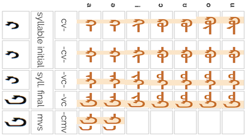 |
|
|
|
|
|
| syllable initial | syll. final | mvs | |||
| cv- | -cv- | -vc- | -vc | -cmv | |
| a | ᠺᠠ᠊ | ᠊ᠺᠠ᠊ | ᠊ᠠᠺ᠊ | ᠊ᠠᠺ | ᠊ᠺᠠ |
| ə | ᠺᠡ᠊ | ᠊ᠺᠡ᠊ | ᠊ᠡᠺ᠊ | ᠊ᠡᠺ | ᠊ᠺᠡ |
| i | ᠺᠢ᠊ | ᠊ᠺᠢ᠊ | ᠊ᠢᠺ᠊ | ᠊ᠢᠺ | |
| ɔ | ᠺᠣ᠊ | ᠊ᠺᠣ᠊ | ᠊ᠣᠺ᠊ | ᠊ᠣᠺ | |
| ʊ | ᠺᠤ᠊ | ᠊ᠺᠤ᠊ | ᠊ᠤᠺ᠊ | ᠊ᠤᠺ | |
| o | ᠺᠥ᠊ | ᠊ᠺᠥ᠊ | ᠊ᠥᠺ᠊ | ᠊ᠥᠺ | |
| u | ᠺᠦ᠊ | ᠊ᠺᠦ᠊ | ᠊ᠦᠺ᠊ | ᠊ᠦᠺ | |
Variants
The following glyph changes should be produced by the font, without the need for variant selectors.
Derived from
Galik letter.ws
Chakhar k
`, '\u{183B}': `ᠻ
k consonant.
ᠻᠠᠷᠲ᠋
`, '\u{183C}': `ᠼ
t͡sʰ consonant.
Used to transcribe foreign words. (Originally for Tibetan ཚ tsʰ and Sanskrit छ cha.)
Shapes
Shaping depends on whether a letter is syllable-initial or syllable-final, but there are typically additional differences for word-initial and word-final syllables. Hint: to find the letters in the text examples, do an in-page search for the letter and highlight the results.
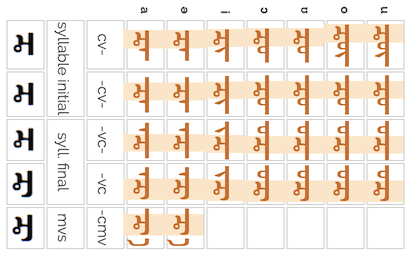 |
|
|
 |
|
|
| syllable initial | syll. final | mvs | |||
| cv- | -cv- | -vc- | -vc | -cmv | |
| a | ᠼᠠ᠊ | ᠊ᠼᠠ᠊ | ᠊ᠠᠼ᠊ | ᠊ᠠᠼ | ᠊ᠼᠠ |
| ə | ᠼᠡ᠊ | ᠊ᠼᠡ᠊ | ᠊ᠡᠼ᠊ | ᠊ᠡᠼ | ᠊ᠼᠡ |
| i | ᠼᠢ᠊ | ᠊ᠼᠢ᠊ | ᠊ᠢᠼ᠊ | ᠊ᠢᠼ | |
| ɔ | ᠼᠣ᠊ | ᠊ᠼᠣ᠊ | ᠊ᠣᠼ᠊ | ᠊ᠣᠼ | |
| ʊ | ᠼᠤ᠊ | ᠊ᠼᠤ᠊ | ᠊ᠤᠼ᠊ | ᠊ᠤᠼ | |
| o | ᠼᠥ᠊ | ᠊ᠼᠥ᠊ | ᠊ᠥᠼ᠊ | ᠊ᠥᠼ | |
| u | ᠼᠦ᠊ | ᠊ᠼᠦ᠊ | ᠊ᠦᠼ᠊ | ᠊ᠦᠼ | |
Derived from
Preclassical Mongolian tsade č-ǰ .ws
Chakhar ʦ
`, '\u{183D}': `ᠽ
t͡s consonant.
ᠪᠤᠤᠽ
Used to transcribe foreign words. (Originally used to transcribe Tibetan dz ཛ; Sanskrit ज).
Shapes
Shaping depends on whether a letter is syllable-initial or syllable-final, but there are typically additional differences for word-initial and word-final syllables. Hint: to find the letters in the text examples, do an in-page search for the letter and highlight the results.
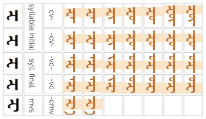 |
|
|
|
 |
|
| syllable initial | syll. final | mvs | |||
| cv- | -cv- | -vc- | -vc | -cmv | |
| a | ᠽᠠ᠊ | ᠊ᠽᠠ᠊ | ᠊ᠠᠽ᠊ | ᠊ᠠᠽ | ᠊ᠽᠠ |
| ə | ᠽᠡ᠊ | ᠊ᠽᠡ᠊ | ᠊ᠡᠽ᠊ | ᠊ᠡᠽ | ᠊ᠽᠡ |
| i | ᠽᠢ᠊ | ᠊ᠽᠢ᠊ | ᠊ᠢᠽ᠊ | ᠊ᠢᠽ | |
| ɔ | ᠽᠣ᠊ | ᠊ᠽᠣ᠊ | ᠊ᠣᠽ᠊ | ᠊ᠣᠽ | |
| ʊ | ᠽᠤ᠊ | ᠊ᠽᠤ᠊ | ᠊ᠤᠽ᠊ | ᠊ᠤᠽ | |
| o | ᠽᠥ᠊ | ᠊ᠽᠥ᠊ | ᠊ᠥᠽ᠊ | ᠊ᠥᠽ | |
| u | ᠽᠦ᠊ | ᠊ᠽᠦ᠊ | ᠊ᠦᠽ᠊ | ᠊ᠦᠽ | |
Derived from
Preclassical Mongolian tsade č-ǰ .ws
Chakhar ʣ
`, '\u{183E}': `ᠾ
h consonant.
ᠾᠧᠵᠢᠩ
ᠲᠸᠾᠷᠠᠨ
Used to transcribe foreign words. (Originally used to transcribe Tibetan /h/ ཧ, ྷ; Sanskrit ह).
Shapes
Shaping depends on whether a letter is syllable-initial or syllable-final, but there are typically additional differences for word-initial and word-final syllables. Hint: to find the letters in the text examples, do an in-page search for the letter and highlight the results.
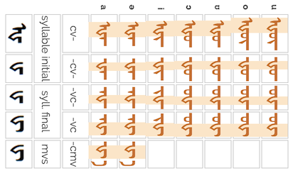 |
 |
|
 |
|
|
| syllable initial | syll. final | mvs | |||
| cv- | -cv- | -vc- | -vc | -cmv | |
| a | ᠾᠠ᠊ | ᠊ᠾᠠ᠊ | ᠊ᠠᠾ᠊ | ᠊ᠠᠾ | ᠊ᠾᠠ |
| ə | ᠾᠡ᠊ | ᠊ᠾᠡ᠊ | ᠊ᠡᠾ᠊ | ᠊ᠡᠾ | ᠊ᠾᠡ |
| i | ᠾᠢ᠊ | ᠊ᠾᠢ᠊ | ᠊ᠢᠾ᠊ | ᠊ᠢᠾ | |
| ɔ | ᠾᠣ᠊ | ᠊ᠾᠣ᠊ | ᠊ᠣᠾ᠊ | ᠊ᠣᠾ | |
| ʊ | ᠾᠤ᠊ | ᠊ᠾᠤ᠊ | ᠊ᠤᠾ᠊ | ᠊ᠤᠾ | |
| o | ᠾᠥ᠊ | ᠊ᠾᠥ᠊ | ᠊ᠥᠾ᠊ | ᠊ᠥᠾ | |
| u | ᠾᠦ᠊ | ᠊ᠾᠦ᠊ | ᠊ᠦᠾ᠊ | ᠊ᠦᠾ | |
Derived from
Galik letter, preceded by an aleph for initial form.ws
Chakhar x
`, '\u{183F}': `ᠿ
ʐ consonant.
Used in Inner Mongolia to transcribe Chinese r ɻ ~ ʐ, always followed by an i. Transliterates ʒ in Tibetan ཞ /ʒa/.
Shapes
Shaping depends on whether a letter is syllable-initial or syllable-final, but there are typically additional differences for word-initial and word-final syllables. Hint: to find the letters in the text examples, do an in-page search for the letter and highlight the results.
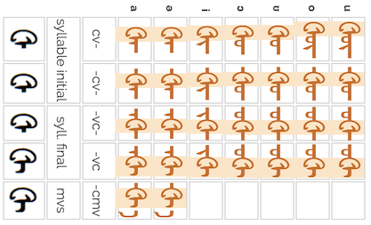 |
|
|
 |
|
|
| syllable initial | syll. final | mvs | |||
| cv- | -cv- | -vc- | -vc | -cmv | |
| a | ᠿᠠ᠊ | ᠊ᠿᠠ᠊ | ᠊ᠠᠿ᠊ | ᠊ᠠᠿ | ᠊ᠿᠠ |
| ə | ᠿᠡ᠊ | ᠊ᠿᠡ᠊ | ᠊ᠡᠿ᠊ | ᠊ᠡᠿ | ᠊ᠿᠡ |
| i | ᠿᠢ᠊ | ᠊ᠿᠢ᠊ | ᠊ᠢᠿ᠊ | ᠊ᠢᠿ | |
| ɔ | ᠿᠣ᠊ | ᠊ᠿᠣ᠊ | ᠊ᠣᠿ᠊ | ᠊ᠣᠿ | |
| ʊ | ᠿᠤ᠊ | ᠊ᠿᠤ᠊ | ᠊ᠤᠿ᠊ | ᠊ᠤᠿ | |
| o | ᠿᠥ᠊ | ᠊ᠿᠥ᠊ | ᠊ᠥᠿ᠊ | ᠊ᠥᠿ | |
| u | ᠿᠦ᠊ | ᠊ᠿᠦ᠊ | ᠊ᠦᠿ᠊ | ᠊ᠦᠿ | |
Chakhar ʐ
`, '\u{1840}': `ᡀ
lʰ consonant.
ᡀᠠᠰᠠ
Transcribes Tibetan lh.
Shapes
Shaping depends on whether a letter is syllable-initial or syllable-final, but there are typically additional differences for word-initial and word-final syllables. Hint: to find the letters in the text examples, do an in-page search for the letter and highlight the results.
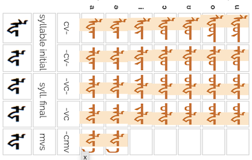 |
 |
|
|
|
|
| syllable initial | syll. final | mvs | |||
| cv- | -cv- | -vc- | -vc | -cmv | |
| a | ᡀᠠ᠊ | ᠊ᡀᠠ᠊ | ᠊ᠠᡀ᠊ | ᠊ᠠᡀ | ᠊ᡀᠠ |
| ə | ᡀᠡ᠊ | ᠊ᡀᠡ᠊ | ᠊ᠡᡀ᠊ | ᠊ᠡᡀ | ᠊ᡀᠡ |
| i | ᡀᠢ᠊ | ᠊ᡀᠢ᠊ | ᠊ᠢᡀ᠊ | ᠊ᠢᡀ | |
| ɔ | ᡀᠣ᠊ | ᠊ᡀᠣ᠊ | ᠊ᠣᡀ᠊ | ᠊ᠣᡀ | |
| ʊ | ᡀᠤ᠊ | ᠊ᡀᠤ᠊ | ᠊ᠤᡀ᠊ | ᠊ᠤᡀ | |
| o | ᡀᠥ᠊ | ᠊ᡀᠥ᠊ | ᠊ᠥᡀ᠊ | ᠊ᠥᡀ | |
| u | ᡀᠦ᠊ | ᠊ᡀᠦ᠊ | ᠊ᠦᡀ᠊ | ᠊ᠦᡀ | |
Derived from
Digraph composed of ᠯ l and ᠾ h.ws
Chakhar lh
`, '\u{1841}': `ᡁ
ʑ consonant.
Transcribes Chinese zhi - used in Inner Mongolia.
Shapes
Shaping depends on whether a letter is syllable-initial or syllable-final, but there are typically additional differences for word-initial and word-final syllables. Hint: to find the letters in the text examples, do an in-page search for the letter and highlight the results.
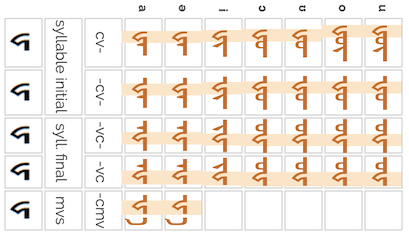 |
|
|
|
|
|
| syllable initial | syll. final | mvs | |||
| cv- | -cv- | -vc- | -vc | -cmv | |
| a | ᡁᠠ᠊ | ᠊ᡁᠠ᠊ | ᠊ᠠᡁ᠊ | ᠊ᠠᡁ | ᠊ᡁᠠ |
| ə | ᡁᠡ᠊ | ᠊ᡁᠡ᠊ | ᠊ᠡᡁ᠊ | ᠊ᠡᡁ | ᠊ᡁᠡ |
| i | ᡁᠢ᠊ | ᠊ᡁᠢ᠊ | ᠊ᠢᡁ᠊ | ᠊ᠢᡁ | |
| ɔ | ᡁᠣ᠊ | ᠊ᡁᠣ᠊ | ᠊ᠣᡁ᠊ | ᠊ᠣᡁ | |
| ʊ | ᡁᠤ᠊ | ᠊ᡁᠤ᠊ | ᠊ᠤᡁ᠊ | ᠊ᠤᡁ | |
| o | ᡁᠥ᠊ | ᠊ᡁᠥ᠊ | ᠊ᠥᡁ᠊ | ᠊ᠥᡁ | |
| u | ᡁᠦ᠊ | ᠊ᡁᠦ᠊ | ᠊ᠦᡁ᠊ | ᠊ᠦᡁ | |
Derived from
Galik letter.ws
Chakhar ʈʂɻ
`, '\u{1842}': `ᡂ
ɕ consonant.
Transcribes Chinese chi - used in Inner Mongolia.
Shapes
Shaping depends on whether a letter is syllable-initial or syllable-final, but there are typically additional differences for word-initial and word-final syllables. Hint: to find the letters in the text examples, do an in-page search for the letter and highlight the results.
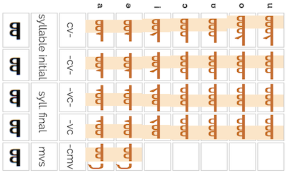 |
|
|
|
|
|
| syllable initial | syll. final | mvs | |||
| cv- | -cv- | -vc- | -vc | -cmv | |
| a | ᡂᠠ᠊ | ᠊ᡂᠠ᠊ | ᠊ᠠᡂ᠊ | ᠊ᠠᡂ | ᠊ᡂᠠ |
| ə | ᡂᠡ᠊ | ᠊ᡂᠡ᠊ | ᠊ᠡᡂ᠊ | ᠊ᠡᡂ | ᠊ᡂᠡ |
| i | ᡂᠢ᠊ | ᠊ᡂᠢ᠊ | ᠊ᠢᡂ᠊ | ᠊ᠢᡂ | |
| ɔ | ᡂᠣ᠊ | ᠊ᡂᠣ᠊ | ᠊ᠣᡂ᠊ | ᠊ᠣᡂ | |
| ʊ | ᡂᠤ᠊ | ᠊ᡂᠤ᠊ | ᠊ᠤᡂ᠊ | ᠊ᠤᡂ | |
| o | ᡂᠥ᠊ | ᠊ᡂᠥ᠊ | ᠊ᠥᡂ᠊ | ᠊ᠥᡂ | |
| u | ᡂᠦ᠊ | ᠊ᡂᠦ᠊ | ᠊ᠦᡂ᠊ | ᠊ᠦᡂ | |
Chakhar ʈʂʰɻ
`, '\u{1843}': `ᡃ
`, '\u{1844}': `ᡄ
`, '\u{1845}': `ᡅ
`, '\u{1846}': `ᡆ
`, '\u{1847}': `ᡇ
`, '\u{1848}': `ᡈ
`, '\u{1849}': `ᡉ
`, '\u{184A}': `ᡊ
`, '\u{184B}': `ᡋ
`, '\u{184C}': `ᡌ
`, '\u{184D}': `ᡍ
`, '\u{184E}': `ᡎ
`, '\u{184F}': `ᡏ
`, '\u{1850}': `ᡐ
`, '\u{1851}': `ᡑ
`, '\u{1852}': `ᡒ
`, '\u{1853}': `ᡓ
`, '\u{1854}': `ᡔ
`, '\u{1855}': `ᡕ
`, '\u{1856}': `ᡖ
`, '\u{1857}': `ᡗ
`, '\u{1858}': `ᡘ
`, '\u{1859}': `ᡙ
`, '\u{185A}': `ᡚ
`, '\u{185B}': `ᡛ
`, '\u{185C}': `ᡜ
`, '\u{185D}': `ᡝ
`, '\u{185E}': `ᡞ
`, '\u{185F}': `ᡟ
`, '\u{1860}': `ᡠ
`, '\u{1861}': `ᡡ
`, '\u{1862}': `ᡢ
`, '\u{1863}': `ᡣ
`, '\u{1864}': `ᡤ
`, '\u{1865}': `ᡥ
`, '\u{1866}': `ᡦ
`, '\u{1867}': `ᡧ
`, '\u{1868}': `ᡨ
`, '\u{1869}': `ᡩ
`, '\u{186A}': `ᡪ
`, '\u{186B}': `ᡫ
`, '\u{186C}': `ᡬ
`, '\u{186D}': `ᡭ
`, '\u{186E}': `ᡮ
`, '\u{186F}': `ᡯ
`, '\u{1870}': `ᡰ
`, '\u{1871}': `ᡱ
`, '\u{1872}': `ᡲ
`, '\u{1873}': `ᡳ
`, '\u{1874}': `ᡴ
`, '\u{1875}': `ᡵ
`, '\u{1876}': `ᡶ
`, '\u{1877}': `ᡷ
`, '\u{1878}': `ᡸ
`, '\u{1880}': `ᢀ
`, '\u{1881}': `ᢁ
`, '\u{1882}': `ᢂ
`, '\u{1883}': `ᢃ
`, '\u{1884}': `ᢄ
`, '\u{1885}': `ᢅ
`, '\u{1886}': `ᢆ
`, '\u{1887}': `ᢇ
`, '\u{1888}': `ᢈ
`, '\u{1889}': `ᢉ
`, '\u{188A}': `ᢊ
`, '\u{188B}': `ᢋ
`, '\u{188C}': `ᢌ
`, '\u{188D}': `ᢍ
`, '\u{188E}': `ᢎ
`, '\u{188F}': `ᢏ
`, '\u{1890}': `ᢐ
`, '\u{1891}': `ᢑ
`, '\u{1892}': `ᢒ
`, '\u{1893}': `ᢓ
`, '\u{1894}': `ᢔ
`, '\u{1895}': `ᢕ
`, '\u{1896}': `ᢖ
`, '\u{1897}': `ᢗ
`, '\u{1898}': `ᢘ
`, '\u{1899}': `ᢙ
`, '\u{189A}': `ᢚ
`, '\u{189B}': `ᢛ
`, '\u{189C}': `ᢜ
`, '\u{189D}': `ᢝ
`, '\u{189E}': `ᢞ
`, '\u{189F}': `ᢟ
`, '\u{18A0}': `ᢠ
`, '\u{18A1}': `ᢡ
`, '\u{18A2}': `ᢢ
`, '\u{18A3}': `ᢣ
`, '\u{18A4}': `ᢤ
`, '\u{18A5}': `ᢥ
`, '\u{18A6}': `ᢦ
`, '\u{18A7}': `ᢧ
`, '\u{18A8}': `ᢨ
`, '\u{18A9}': `ᢩ
`, '\u{18AA}': `ᢪ
`, // OTHER CHARACTERS '\u{202F}': `Many Mongolian suffixes are separated from the root or other suffixes by a small gap. Multiple suffixes may be attached to the word stem, each with their own initial gap. Characters following immediately following the gap may take on special shapes.
ᠵᠠᠷᠢᠮ ᠳᠠᠭᠠᠨ
Lines and word selections, etc. should not be broken where the gaps appear. The word and its suffixes should be kept together.
The Unicode Standard provides this character to create the gap. It is thinner than a normal space, and prevents line-breaking. Fonts and rendering should automatically perform any special glyph shaping needed for the initial letter in the suffix.
Abbreviated as NNBSP.
`, }